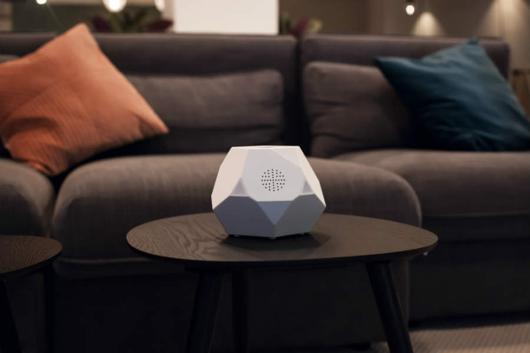

Visualfy home es un dispositivo diseñado para personas con problemas auditivos.Su funcion principal es detectar los distintos ruidos del entorno y te avisa de donde se produce mediante un sistema de luces las cuales puedes modificar a tu manera
Funcionamiento
El funcionamiento de Visualfy es muy simple. Esta formado por el aparato principal y por sensores. Ubicaremos los sensores cerca de las fuentes de sonido y cuando estos sensores reciban el sonido avisaran al aparato principal que contestara con las luces y vibraciones oportunas para avisar el usuario
Beneficios
Las personas con problemas auditivos tienen grandes problemas para atender a las señales acústicas del día a día. La sociedad actual en la que vivimos no esta diseñada para personas sordas, pero con inventos como los que desarrolla esta empresa las personas con problemas auditivos podran mejorar su calidad de vida y adaptarse mejor al entorno. Con Visualfy home podemos captar diversos sonidos cotidianos. Con este aparato podremos localizar:
- LLamada de telefono
- Alarma de incendios
- Telefonillo
- Timbre
- Bebe llorando
- Golpes en la puerta
- Despertador